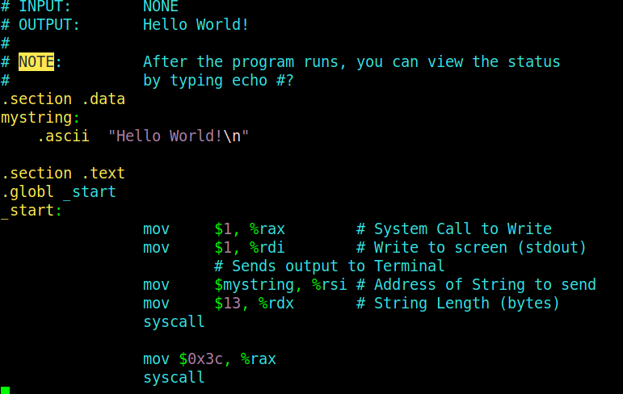
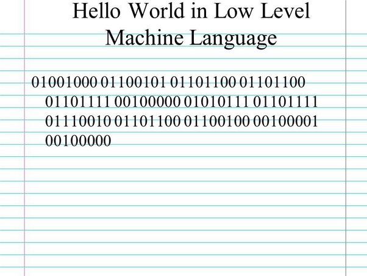

Linguaggio Assembly
Il linguaggio assembly è un linguaggio di basso livello che fornisce una rappresentazione simbolica delle istruzioni di un processore. Ogni istruzione assembly corrisponde direttamente a un'istruzione in linguaggio macchina, il linguaggio binario eseguito dalla CPU.
Le istruzioni assembly sono specifiche per un'architettura di processore e forniscono un controllo diretto sull'hardware. Gli sviluppatori utilizzano il linguaggio assembly quando è necessario ottimizzare il codice per eseguire operazioni specifiche a livello di processore o quando si scrivono componenti di sistema a basso livello.
Linguaggio Macchina
Il linguaggio macchina è il linguaggio binario eseguito direttamente dalla CPU di un computer. È composto da sequenze di 0 e 1 che rappresentano istruzioni eseguibili e dati. Ogni istruzione in linguaggio macchina è specifica per un'architettura di processore e viene eseguita direttamente dal processore stesso.
Gli sviluppatori raramente scrivono direttamente in linguaggio macchina a causa della sua complessità e mancanza di leggibilità. Invece, utilizzano linguaggi di programmazione più ad alto livello o linguaggi assembly per semplificare lo sviluppo del software.
